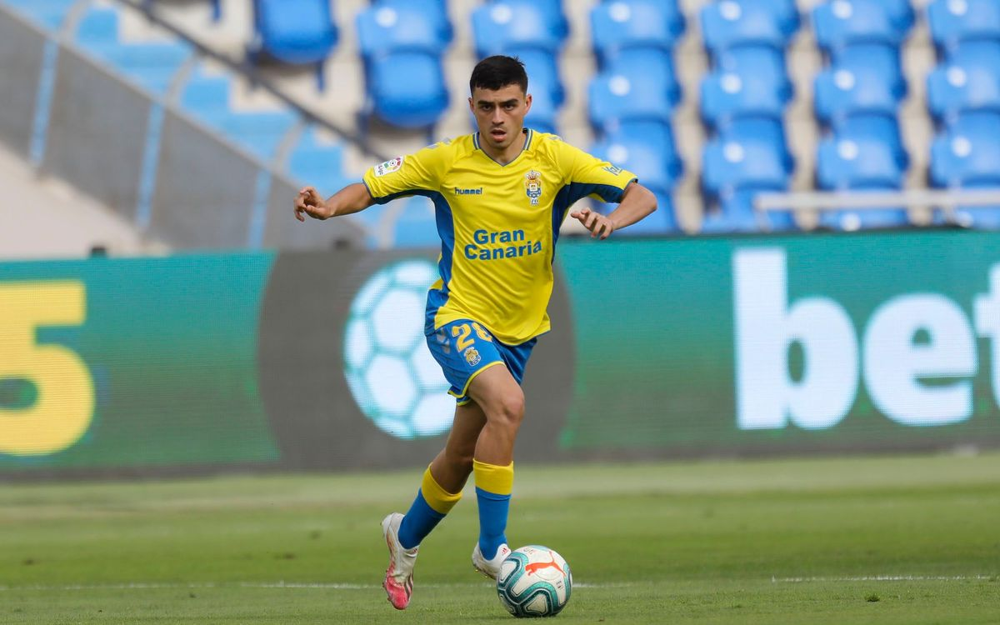

De Tegueste al Mundo
Nacido en 2002, Pedro González López se crió en Tenerife bajo la influencia del estilo de juego de Andrés Iniesta. Su ascenso fue meteórico: de la UD Las Palmas al FC Barcelona en apenas un año, convirtiéndose en el pilar del mediocampo culé.
Esta es la historia de Pedri →